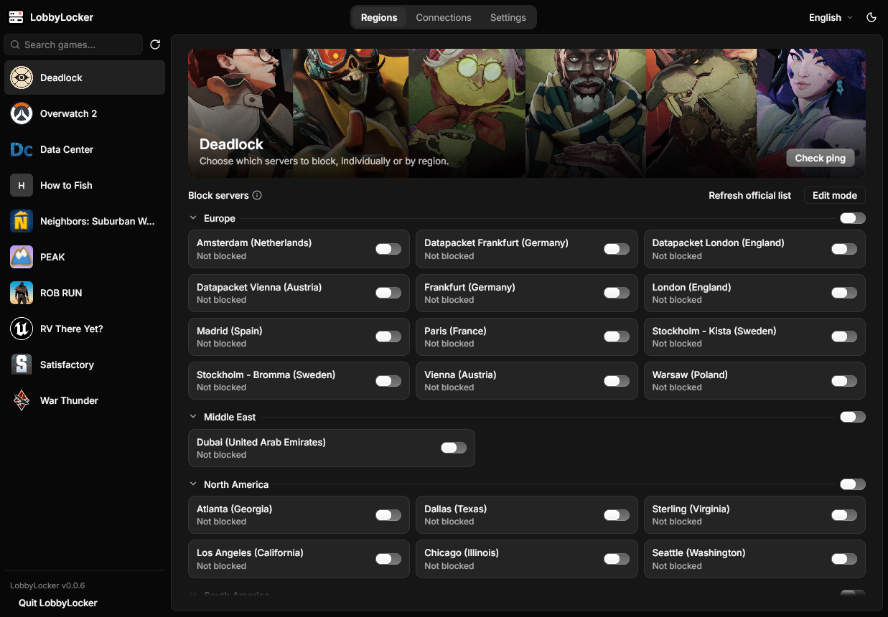

GitHub
Choose where you play.
Block unwanted server regions for Counter-Strike 2, Deadlock, Overwatch 2, and more with your system firewall.
Windows builds may show a SmartScreen warning.
Linux blocks system-wide and requires nftables, pkexec, and a desktop polkit agent.
Free and open source · v0.0.11